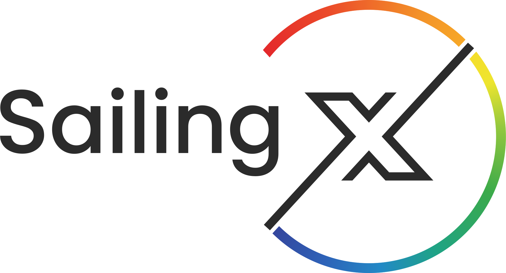

AcademyCheckliste an Bord
Schwerwetter & Gewitter
Rechtzeitig entscheiden,
Schiff und Crew vorbereiten
1Rechtzeitig entscheiden
Standort bestimmen
Wo stehen wir genau? Wie lange hält das Wetter noch? Was sagt die Warnung (Richtung, Stärke, Zeit)?
Fluchthafen?
Nur, wenn er gegen Wind und See aus der erwarteten Richtung schützt, sicher anzusteuern ist und rechtzeitig erreicht wird. Häfen an der Leeküste sind riskant.
Sonst: freier Seeraum
Ist kein Hafen sicher erreichbar: weg von der Küste, Raum nach Lee gewinnen. Die größte Gefahr ist der Legerwall.
2Schiff vorbereiten
- Rechtzeitig reffen – Sturmfock / Trysegel klar
- An Deck alles zurren, Beiboot kieloben verzurren oder an Deck
- Unter Deck alles seefest verstauen
- Luken schalken, Steckschotten einsetzen, Seeventile schließen
- Strecktaue von achtern bis zum Bug auf beiden Seiten
- Lenzpumpen prüfen, Handpumpe mit Hebel bereit
- Position eintragen, Kurs zum Ziel/Fluchthafen
- Motor-Check, Diesel voll, Filter sauber
- Positionslichter prüfen, Taschenlampen griffbereit
3Crew vorbereiten
- Westen und Lifebelts an – jeder eingepickt
- Ölzeug, warme Kleidung, Handschuhe
- Warme Getränke und Suppe vorkochen (Thermoskannen)
- Seetaugliches Essen griffbereit
- Mittel gegen Seekrankheit rechtzeitig
- Wache einteilen, Skipper schläft vor
- Aufgaben klar: Ruder, Reffen, Navigation, Funk
- Crew über Plan und Lage informieren
4Reffen
- Reffen, sobald Ruderdruck und Krängung zu groß werden – „wenn du daran denkst, ist es Zeit“.
- Vorsegel: Rollreff – dabei den Holepunkt nach vorn.
- Großsegel: Bindereff oder Rollreff.
- Nach der Faustregel etwa ab 5 Bft ans erste Reff denken – je nach Jacht.
Kritischer Punkt
Ab etwa 7–9 Bft (je nach Jacht und Crew) ist kein Aufkreuzen mehr möglich – die Jacht treibt nur noch nach Lee.
5Abwettern
- Beiliegen: wie eine Wende einleiten, Fock back stehen lassen, Groß dicht, Ruder auf Anluven – die Jacht treibt langsam quer nach Lee.
- Ablaufen vor dem Wind (Lenzen vor Topp und Takel). Wird die Jacht zu schnell: Trossen in einer Bucht nachschleppen.
- Gefahr: Querschlagen und Kentern in brechender See.
- Unter Motor schräg gegen die Wellen – nicht lange mit starker Lage (Schmierung).
- Am Legerwall mit Motorkraft freifahren oder mit viel Kette ankern, Motor mitlaufen lassen.
Gewitter
- Anzeichen: rasch wachsende Quellwolken (Cumulonimbus mit Amboss), Wetterleuchten, drückende Schwüle, Böenwalze.
- Vor der Zelle schwacher Wind zur Wolke hin – darunter schlagartig Sturmböen aus jeder Richtung, Starkregen, Hagel, kaum Sicht.
- Früh reffen, Segel verkleinern oder bergen, Motor an.
- Lichter und Schallsignale; nicht benötigte Elektronik aus, UKW-Antenne abklemmen, Metall nicht berühren, möglichst unter Deck.
- Fluchthafen oder offenen Seeraum suchen – nicht auf Legerwall geraten, der Zelle ausweichen.
Schlechtes Wetter kommt selten überraschend: Wetterbericht, Barometer (Fall oder Anstieg ab etwa 1 hPa pro Stunde = Starkwind oder Sturm), Wolken und Dünung beobachten – und früh handeln. Wer rechtzeitig im sicheren Hafen liegt, muss nicht abwettern.